visited 8 - 11 Nov 99
web version, with
|
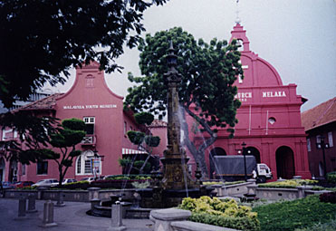 |
| Most Tourist spots are within walking distance of Town Square |
(Note:) This describes travel in S.E.Asia between Oct 16, 1999 and Jan 22, 2000.
| After breakfast in Dumai, a trip to the bank to cash another
travelers check in Rupia, for the exchange rate gets worse all the time
(6100R/$), and I'll be back in Indonesia in a few short weeks. Then on
to the Indomal Express office to check in for the crossing two hours before
departure, a requirement of the passport control and customs folks of the
two countries.
More time to play the fiddle, but I'm still happy to finally board the ferry for the 2-1/2 hour crossing of the Straits of Melaka. Round trip ticket cost was 200,000 Rupia, no bargain when you consider the 70-hour one way cruise was only 161,000 Rupia. Even though the engines were noisy, it was peaceful getting away from the hawkers. About an hour into the trip, our passports are collected, then returned. The tide was out when we neared Melaka, so each passenger had to jump from our craft to a smaller boat for the final mile or so of our crossing. With backpack and all your luggage. At such times, don't think about falling or missing the deck of the other craft. Not a pretty image. Arrival in Melaka from Dumai is astounding. No one grabs your bags. No one yells "Transfer Mista?" You are not met with a crowd of 10 to 20 pushing, shoving men, all trying to get you away from the crowd, so they can charge an exorbitant rate for transportation, all the while telling you that the hotel you want to go to is "closed" or "filled up - no room". When you walk off the boat in Melaka, their are not even signs directing you to passport control, or customs, as it all transpired while departing Dumai, and on board the Indomal Express. Melaka immediately becomes my favorite city in Malaysia. As luck would have it, I was directed to the clean and well-run Robin's Nest Guesthouse, which had a three-person dorm. Not all guest houses have dorms, but when available, present a single traveler another choice to economize. (Traveling as a pair is cheaper yet, as most such accommodations have two separate beds in a double room.) Hidemisan is a Japanese author who wrote a sensational book 16 years ago about being a "house husband". Arno, an Italian living in Belgium, shows me all the computer software he purchased in Kuala Lumpur. We all talk about our travels, passing along current tips of places we have visited. Taman Negara in Malaysia, and the country of Viet Nam are highly recommended. Most tourist attractions are within hiking distance of the Melaka town center, and as I found in Bali, the weather is cooperative in the mornings. Along the banks of the river, I was told to look for, and saw large monitor lizards, about the size of alligators. People tell me they are now protected, as are the Komodo Dragons, the most famous of the monitor lizards. Trying to speak Bahasa Malay is nearly impossible, as nearly everyone speaks English as a second language. Malaysian food has been excellent, except that mangos are not in season. The shopping mall feels rather Western. I buy a well-made pair of shorts, and send out lots of email in air-conditioned comfort from the third floor, right next to a video arcade. I unsuccessfully try to buy a new travel guide, but all I can find is the prior edition, and the shop keepers will not give me a discount. After satisfying myself with the historic sites, I make plans to continue up to Kuala Lumpur. Now I begin to understand the thoughts of the couple from Melaka I met in Dumai, and wish I could email them. There is nothing backwards about Malaysia. Kuala Lumpur is little more than a big city, but I still manage to consume a couple of days here. Shopping, walking, and of course eating. On a trip to the famed twin towers, I finally purchase the 10th edition of Lonely Planet's "South-East Asia on a Shoestring", the perfect companion for the balance of my trip. An accompanied performance of traditional dance reminds me of Philadelphia. China Town affords many opportunities for sights and delicious food. More discussions with travelers about Taman Negara, and about Palau Perhentian. It doesn't look good, but the longer I wait, the worse it will be. Bill |
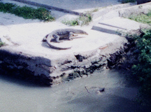 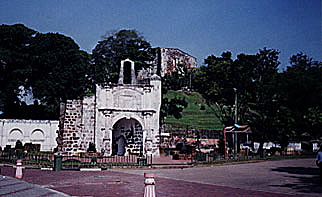 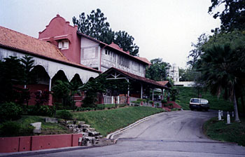 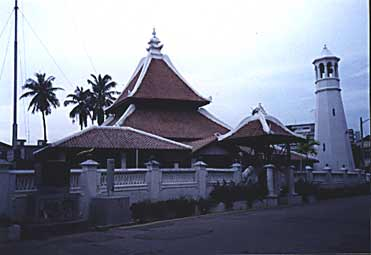 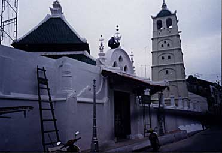 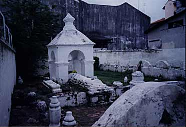 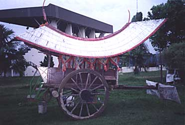 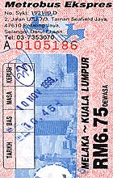 |
| 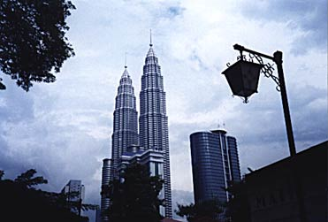
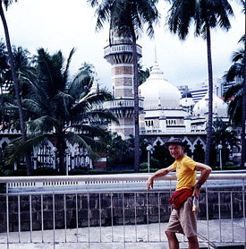 |
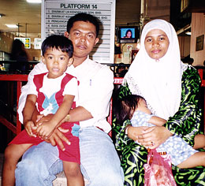 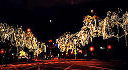 |